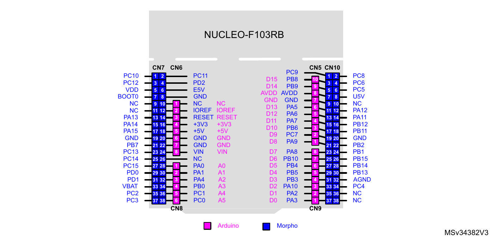

STM32 Nucleo-F103RB + DE1-SoC 연동 실습 매뉴얼
실습 개요
이 매뉴얼은 STM32 Nucleo-F103RB(마이크로컨트롤러, MCU)와 DE1-SoC(FPGA)를 점퍼선 3가닥으로 연결해 세 가지 실습을 순서대로 수행한다. MCU가 만든 신호를 FPGA가 관찰하고, 해석하고, 측정한다.
| 실습 | 내용 | FPGA 설계량 | 예상 시간 |
|---|---|---|---|
| 1 | UART 한 프레임을 LED 10개에 표시, SignalTap으로 파형 관찰 | 프레임 캡처(시프트 레지스터) | 60분 |
| 2 | UART 링크: 수신 바이트를 7세그먼트에 표시, 되돌려 보내기 | UART 수신기·송신기 | 120분 |
| 3 | PWM 주기·듀티 측정기 | 엣지 검출기 + 카운터 | 90분 |
세 실습은 같은 배선을 그대로 쓴다. 실습 1과 2는 같은 MCU 프로젝트에서 출발하므로 실습 1에서 만든 것을 지우지 않는다.
선수 지식은 다음과 같다.
- VS Code + PlatformIO에서 프로젝트를 빌드하고 보드에 내려받을 수 있다.
- Quartus에서 Verilog 프로젝트를 컴파일하고 DE1-SoC에 내려받을 수 있다.
- 플립플롭, 카운터, 상태기계(FSM, Finite State Machine)를 Verilog로 쓸 수 있다.
폴더 구성
이 폴더 하나에 매뉴얼, FPGA 소스, MCU 프로젝트가 모두 들어 있다.
| 위치 | 내용 | 쓰는 실습 |
|---|---|---|
13_DE1SoC_Link 실습매뉴얼.html |
이 문서 | 전체 |
fpga/ |
Verilog 소스 7개와 핀 배치 스크립트 pins.tcl |
1, 2, 3 |
01_Link_UART_Frame_HAL_c/ |
MCU 프로젝트(HAL): 1초마다 A 한 바이트 송신 |
1 |
02_Link_UART_Echo_HAL_c/ |
MCU 프로젝트(HAL): PC 터미널과 FPGA 사이 중계 | 2 |
03_Link_PWM_Meter_HAL_c/ |
MCU 프로젝트(HAL): 1 kHz PWM, 듀티 5단계 | 3 |
MCU 프로젝트는 VS Code + PlatformIO로 폴더를 열어 바로 내려받을 수 있다. 본문의 "MCU 프로그램" 단계는 저장소의 원본 예제에서 이 프로젝트를 직접 만드는 과정을 설명한다. 폴더명 끝의 _c는 저장소 규칙대로 사용자 검토 전이라는 표시이다.
준비물과 공통 배선
두 보드의 입출력은 모두 3.3 V이므로 레벨 변환 없이 점퍼선으로 직접 연결한다. DE1-SoC GPIO 헤더의 36개 핀은 모두 3.3 V이다(DE1-SoC User Manual Table 3-11).
준비물
| 항목 | 수량 | 비고 |
|---|---|---|
| STM32 Nucleo-F103RB + USB 케이블(mini-B) | 1 | ST-LINK 내장 |
| DE1-SoC + 12 V 어댑터 + USB 케이블(USB Blaster II) | 1 | FPGA는 Cyclone V 5CSEMA5F31C6 |
| 점퍼선(암-암) | 4 | 20 cm 이하 권장 |
| PC | 1 | VS Code + PlatformIO, Quartus Prime Lite 18.1 |
| 멀티미터 | 1 | 접지 핀 확인용 |
배선
화살표는 신호가 흐르는 방향이다. 접지선은 신호선보다 먼저 연결하고 가장 나중에 뺀다.
| 신호 | Nucleo | DE1-SoC JP1 | 쓰는 실습 |
|---|---|---|---|
| UART MCU→FPGA | D8 (PA9, USART1_TX) | 1번 핀, GPIO_0[0], PIN_AC18 | 1, 2 |
| UART FPGA→MCU | D2 (PA10, USART1_RX) | 2번 핀, GPIO_0[1], PIN_Y17 | 2 |
| PWM | D7 (PA8, TIM1_CH1) | 3번 핀, GPIO_0[2], PIN_AD17 | 3 |
| 접지 | GND | 12번 핀, GND | 전체 |
JP1 헤더는 1번 핀부터 GPIO_0[0], GPIO_0[1], … 순서이고 11번이 5 V, 12번이 GND, 29번이 3.3 V, 30번이 GND이다. 1번 핀 위치는 보드 실크 인쇄와 사용자 매뉴얼의 GPIO 헤더 핀 배치 그림으로 확인한다.
보드에서 핀 찾기
Nucleo-F103RB. 분홍색이 Arduino 헤더이다. 이 실습은 오른쪽의 CN5, CN9와 왼쪽의 CN6을 쓴다.

출처: UM1724 Rev 17, 31쪽, Figure 13. 커넥터별 핀 번호는 같은 문서 40쪽 Table 12(Arduino)와 57쪽 Table 27(Morpho)에 있다. CN10은 그림의 파란색 오른쪽 커넥터이고, 홀수 핀이 안쪽 줄이다.
| 신호 | 커넥터와 핀 (Arduino / Morpho) | 그림에서의 위치 |
|---|---|---|
| D8 (PA9) | CN5 1번 / CN10 21번 | 오른쪽 위 커넥터의 맨 아래 |
| D7 (PA8) | CN9 8번 / CN10 23번 | 오른쪽 아래 커넥터의 맨 위 |
| D2 (PA10) | CN9 3번 / CN10 33번 | 오른쪽 아래 커넥터의 아래에서 세 번째 |
| GND | CN6 6번 또는 7번 / CN10 9번 또는 20번 | 왼쪽 위 커넥터의 아래에서 두·세 번째 |
D8과 D7은 서로 다른 커넥터이고 그 사이에 틈이 있다. 보드 실크 인쇄의 D8, D7, D2, GND 글자로 한 번 더 확인한다.
DE1-SoC JP1. 2줄 × 20핀 헤더이고, 홀수 핀이 한 줄, 짝수 핀이 다른 줄이다.
이 그림은 핀 번호의 순서만 나타낸다. 보드 위에서 헤더가 놓인 방향과 1번 핀의 모서리는 매뉴얼 원문으로 확인하지 못했으므로, 보드 실크 인쇄의 1번 표시와 아래의 접지 도통 확인으로 정한다.
연결 전 확인
- 두 보드의 전원을 모두 끈다.
- 멀티미터 도통 모드로 JP1 12번 핀과 DE1-SoC의 USB 커넥터 금속 외피가 이어져 있는지 확인한다. 이어져 있으면 그 핀이 GND이다.
- 접지선을 먼저 연결하고, 신호선 3가닥을 표대로 연결한다.
- JP1의 11번(5 V)과 29번(3.3 V) 핀에는 아무것도 연결하지 않는다. 두 보드는 각자의 USB·어댑터로 전원을 받는다.
주의점
- USART2가 아니라 USART1을 쓴다. Nucleo의 USART2(PA2, PA3)는 ST-LINK 가상 COM 포트에 연결되어 있고 Arduino 헤더 D1, D0에는 이어져 있지 않다(저장소
02_USART/08_USART_printf_DualREADME). - D2 선은 실습 2에서만 꽂아 둔다. 실습 3의 MCU 프로그램은 PA10(D2)을 PWM 출력으로 쓴다. 실습 2의 FPGA 회로도 같은 선을 출력으로 구동하므로, 두 출력이 맞부딪히지 않게 실습 3을 시작하기 전에 D2 선을 뺀다.
- MCU가 보내는 신호는 FPGA의 50 MHz 클럭과 무관한 시점에 변한다. FPGA에서는 반드시 2단 플립플롭 동기화기(synchronizer)를 거친 뒤 사용한다.
Quartus 프로젝트 만들기 (세 실습 공통)
fpga/ 폴더의 Verilog 파일을 Project > Add/Remove Files in Project로 한꺼번에 넣어도 된다. 핀 배치는 fpga/pins.tcl을 Quartus 프로젝트 폴더에 복사한 뒤 Tcl Console에서 source pins.tcl을 실행한다. 아래는 파일을 직접 만드는 절차이다.프로젝트는 하나만 만들고, 실습마다 최상위 모듈(top-level entity)만 바꾼다.
- File > New Project Wizard를 연다. 작업 폴더와 프로젝트 이름을
nucleo_link로, 최상위 모듈 이름을lab1_top으로 적는다. - Family는 Cyclone V, Device는 5CSEMA5F31C6을 고른다.
- Assignments > Device > Device and Pin Options > Unused Pins에서 As input tri-stated를 고른다. 쓰지 않는 핀이 출력으로 구동되는 것을 막는다.
- File > New > Verilog HDL File로 아래
common.v를 만들어 프로젝트에 넣는다. 세 실습이 함께 쓰는 동기화기와 7세그먼트 디코더이다. - View > Utility Windows > Tcl Console을 열고, 부록의 핀 배치 명령을 붙여 넣어 실행한다. Pin Planner에서 직접 지정해도 된다(아래 「핀 배치 방법 두 가지」).
// common.v
// 2단 플립플롭 동기화기: 비동기 입력을 CLOCK_50 영역으로 옮긴다
module sync2 #(parameter INIT = 1'b1) (
input wire clk,
input wire d, // 비동기 입력 (MCU가 만든 신호)
output wire q // clk에 동기된 출력
);
reg [1:0] ff = {2{INIT}};
always @(posedge clk) ff <= {ff[0], d};
assign q = ff[1];
endmodule
// 4비트 값 -> 7세그먼트 (DE1-SoC HEX는 0일 때 켜진다)
module hex7seg (
input wire [3:0] x,
output reg [6:0] seg // seg[0]=a ... seg[6]=g
);
always @(*) begin
case (x)
4'h0: seg = 7'b1000000; 4'h1: seg = 7'b1111001;
4'h2: seg = 7'b0100100; 4'h3: seg = 7'b0110000;
4'h4: seg = 7'b0011001; 4'h5: seg = 7'b0010010;
4'h6: seg = 7'b0000010; 4'h7: seg = 7'b1111000;
4'h8: seg = 7'b0000000; 4'h9: seg = 7'b0010000;
4'hA: seg = 7'b0001000; 4'hB: seg = 7'b0000011;
4'hC: seg = 7'b1000110; 4'hD: seg = 7'b0100001;
4'hE: seg = 7'b0000110; default: seg = 7'b0001110;
endcase
end
endmodule
핀 배치 방법 두 가지
핀 배치는 Tcl 명령으로 한 번에 넣거나, Pin Planner 화면에서 하나씩 지정한다. 두 방법 모두 같은 .qsf 파일에 저장되므로 결과는 같다.
| 방법 | 장점 | 단점 |
|---|---|---|
| Tcl Console | 한 번에 끝난다. 세 실습의 핀을 미리 다 넣을 수 있다 | 어느 핀이 어디인지 눈으로 보이지 않는다 |
| Pin Planner | 포트 이름과 핀을 표와 칩 그림으로 확인하며 지정한다 | 현재 최상위 모듈의 포트만 보인다. 7세그먼트처럼 핀이 많으면 오래 걸린다 |
Pin Planner로 지정하는 절차
- 최상위 모듈 파일(실습 1이면 lab1_top.v)을 만든 뒤 Processing > Start > Start Analysis & Elaboration을 실행한다. 전체 컴파일(Start Compilation)을 해도 된다. 이 단계를 거쳐야 포트 이름이 Pin Planner에 나타난다.
- Assignments > Pin Planner를 연다.
- 아래쪽 All Pins 목록의 Node Name 열에서 포트를 찾는다.
LEDR같은 버스는LEDR[0],LEDR[1]…로 한 줄씩 나온다. - 그 줄의 Location 칸을 더블 클릭하고 핀 이름을 입력한다.
AF14만 입력하고 Enter를 누르면PIN_AF14로 들어간다. - I/O Standard 칸을 3.3-V LVTTL로 바꾼다. 한 칸을 바꾼 뒤 복사해 나머지 줄에 붙여 넣으면 빠르다.
MCU_TX와MCU_PWM줄은 Weak Pull-Up Resistor 칸을 On으로 한다. 이 열이 없으면 열 제목을 오른쪽 클릭해 Customize Columns에서 추가한다.- Pin Planner를 닫는다. 따로 저장하지 않아도 입력한 값이 프로젝트에 반영된다.
- Processing > Start Compilation으로 다시 컴파일한다. 핀 배치는 컴파일을 다시 해야
.sof에 들어간다.
입력할 값은 다음과 같다. LEDR과 HEX0~HEX5의 핀은 부록의 목록을 [0]부터 순서대로 넣는다.
| Node Name | Location | 쓰는 실습 |
|---|---|---|
CLOCK_50 |
PIN_AF14 | 1, 2, 3 |
MCU_TX |
PIN_AC18 | 1, 2 |
MCU_RX |
PIN_Y17 | 2 |
MCU_PWM |
PIN_AD17 | 3 |
SW[0] |
PIN_AB12 | 3 |
LEDR[0]~LEDR[9] |
부록 목록 | 1, 2, 3 |
HEX0[0]~HEX1[6] |
부록 목록 | 2, 3 |
HEX2[0]~HEX5[6] |
부록 목록 | 3 |
Pin Planner는 현재 최상위 모듈의 포트만 보여 준다. 실습 2, 3으로 넘어가 최상위 모듈을 바꾸면 1단계부터 다시 해서 새로 생긴 포트(실습 2는 HEX0, HEX1도 포함: MCU_RX, MCU_PWM, SW[0], HEX2~HEX5)만 추가로 지정한다. 이름이 같은 포트의 배치는 그대로 남는다.
컴파일 뒤에는 Compilation Report의 Fitter > Resource Section > Input Pins / Output Pins에서 각 포트가 원하는 핀에 배치되었는지 확인한다. Tcl로 넣은 경우도 같은 방법으로 확인한다.
FPGA에 내려받기 (세 실습 공통)
이 절차는 지금 실행하지 않고, 각 실습에서 최상위 모듈 파일을 만든 뒤에 쓴다. 지금은 common.v만 있어서 컴파일하면 최상위 모듈 lab1_top을 찾지 못한다는 오류가 난다.
| 실습 | 최상위 모듈(top-level entity) | 그 안에서 불러 쓰는 하위 모듈 |
|---|---|---|
| 1 | lab1_top |
sync2, frame_leds |
| 2 | lab2_top |
sync2, uart_rx, uart_tx, hex7seg |
| 3 | lab3_top |
sync2, hex7seg |
sync2와 hex7seg는 최상위 모듈이 아니라 부품이다. FPGA의 핀과 연결되는 포트(CLOCK_50, MCU_TX, LEDR 등)는 최상위 모듈에만 있다.
최상위 모듈 만들기 (lab1_top 예)
최상위 모듈은 Verilog 파일로 쓰거나 회로도(Block Diagram/Schematic File)로 그린다. 둘 중 하나만 고른다. 같은 이름의 lab1_top.v와 lab1_top.bdf가 함께 프로젝트에 있으면 모듈 이름이 겹쳐 오류가 난다.
방법 A: Verilog로 쓴다 (이 매뉴얼의 기본)
- File > New > Verilog HDL File을 열고 실습 1의 2단계에 있는
frame_leds.v코드를 넣어frame_leds.v로 저장한다. - 같은 방법으로 아래 코드를 넣어
lab1_top.v로 저장한다. - 두 파일 모두 저장할 때 Add file to current project에 체크되어 있는지 확인한다.
// lab1_top.v (실습 1의 2단계에 있는 코드와 같다)
module lab1_top (
input wire CLOCK_50,
input wire MCU_TX, // GPIO_0[0] <- Nucleo D8 (PA9, USART1_TX)
output wire [9:0] LEDR // LEDR9 = 시작, LEDR8~1 = D0~D7, LEDR0 = 정지
);
wire rx_s; // 동기화된 수신선 (SignalTap에서 볼 신호)
wire busy; // 프레임 수신 중 (SignalTap에서 볼 신호)
sync2 u_sync (.clk(CLOCK_50), .d(MCU_TX), .q(rx_s));
frame_leds u_cap (.clk(CLOCK_50), .rx(rx_s), .frame(LEDR), .busy(busy));
endmodule
방법 B: 회로도로 그린다
frame_leds.v를 먼저 만들어 프로젝트에 넣는다(방법 A의 1번).common.v를 연 상태에서 File > Create/Update > Create Symbol Files for Current File을 실행한다.frame_leds.v를 열고 한 번 더 실행한다.sync2,hex7seg,frame_leds의 심볼(.bsf)이 만들어진다.- File > New > Block Diagram/Schematic File을 연다.
- 빈 곳을 더블 클릭해 Symbol 창을 열고, Project 폴더에서
sync2와frame_leds를 하나씩 놓는다. - 같은 창의
primitives > pin에서input두 개와output한 개를 놓는다. - 핀 이름을 더블 클릭해 각각
MCU_TX,CLOCK_50,LEDR[9..0]으로 바꾼다. 회로도에서는 버스 범위를 점 두 개(..)로 쓴다. - 선으로
MCU_TX→sync2의d,CLOCK_50→두 블록의clk,sync2의q→frame_leds의rx를 잇는다. frame_leds의frame[9..0]과LEDR[9..0]은 버스 선(굵은 선, Bus Tool)으로 잇는다.busy는 연결하지 않아도 된다.q에서 나가는 선을 클릭하고rx_s를 입력해 선에 이름을 붙인다. SignalTap에서 이 이름으로 찾는다.lab1_top.bdf로 저장한다.
회로도로 만들면 인스턴스 이름이 u_sync, u_cap 대신 inst, inst1로 붙는다. SignalTap에서 busy를 찾을 때 이름이 다르게 보인다.
최상위 모듈로 지정하기
프로젝트를 만들 때 최상위 모듈 이름을 lab1_top으로 적었으므로, 파일 이름과 모듈 이름이 lab1_top이면 따로 지정할 것이 없다. 다르게 적었거나 실습 2, 3으로 바꿀 때는 다음 둘 중 하나로 지정한다.
- Project Navigator의 Files 탭에서 파일을 오른쪽 클릭해 Set as Top-Level Entity를 고른다.
- Assignments > Settings > General의 Top-level entity 칸에 모듈 이름을 적는다.
지정한 뒤 Processing > Start > Start Analysis & Elaboration을 실행하면 Project Navigator의 Hierarchy 탭 맨 위에 lab1_top이, 그 아래에 sync2:u_sync가 보인다.
- Processing > Start Compilation으로 컴파일한다.
- Tools > Programmer를 열고 Hardware Setup에서 DE-SoC를 고른다.
- Auto Detect를 누르고 5CSEMA5를 고른다. 목록에
SOCVHPS와5CSEMA5두 장치가 나타난다. 5CSEMA5를 오른쪽 클릭해 Change File에서output_files/nucleo_link.sof를 지정한다.- Program/Configure에 체크하고 Start를 누른다.
실습 1: SignalTap으로 UART 파형 관찰
MCU가 1초마다 보내는 글자 A 한 프레임을 FPGA가 비트 그대로 LEDR9~LEDR0에 켜고, 같은 선을 FPGA 안의 로직 분석기(SignalTap Logic Analyzer)로 20 ns 간격으로 캡처한다. 목표는 두 가지이다. LED에 0100000101이 보이는 것, 그리고 1비트의 폭이 434클럭(8.68 us)인지 직접 재는 것이다.
선은 유휴(idle) 상태에서 High이고, 시작 비트의 하강 엣지가 프레임의 기준점이다.
1단계: MCU 프로그램 준비
01_Link_UART_Frame_HAL_c 폴더를 열어 바로 Upload해도 된다. 아래는 원본 예제에서 직접 만드는 절차이다.저장소의 Examples/02_USART/08_USART_printf_Dual 예제를 바탕으로 한다. 이 예제는 USART1(D8)과 USART2(PC 터미널)가 이미 115200 bps 8N1로 설정되어 있다.
- 예제 폴더를 저장소 밖의 작업 폴더로 복사한다. 이름은
link_uart로 한다. 저장소 안의 원본은 고치지 않는다. - VS Code에서
link_uart폴더를 연다. Core/Src/main.c에서while (1)안의USER CODE BEGIN 3영역을 아래로 바꾼다. 1초마다 글자A한 바이트만 보낸다.- PlatformIO의 Upload로 내려받는다.
- 시리얼 모니터(115200 8N1)에 1초마다
A가 하나씩 이어서 찍히는지 확인한다.
/* USER CODE BEGIN 3 */
uint8_t ch = 'A'; /* 0x41 = 0100 0001 */
HAL_UART_Transmit(&huart1, &ch, 1, 10); /* USART1_DR <- ch : D8 -> FPGA */
HAL_UART_Transmit(&huart2, &ch, 1, 10); /* USART2_DR <- ch : PC 터미널 */
HAL_Delay(1000); /* 1초에 한 프레임 */
}
/* USER CODE END 3 */
한 번에 한 바이트만 보내는 이유는 LED가 마지막으로 받은 프레임을 보여 주기 때문이다. printf("A\n")처럼 여러 바이트를 연달아 보내면 LED에는 마지막 바이트(0x0A)만 남는다. 이때 LED는 0010100001로 보인다(시작 0, 0x0A의 LSB부터 0101 0000, 정지 1).
2단계: FPGA 회로 작성
fpga/frame_leds.v, fpga/lab1_top.vframe_leds.v와 lab1_top.v를 만들어 프로젝트에 넣는다. frame_leds는 카운터 하나와 10비트 시프트 레지스터 하나이다. 시작 비트의 하강 엣지에서 반 비트(217클럭)를 기다린 뒤, 434클럭마다 선의 값을 읽어 왼쪽으로 밀어 넣는다. 열 번 읽으면 그 값을 LED에 내보낸다.
// frame_leds.v
// 시작 비트의 하강 엣지부터 1비트 간격으로 10번 표본화해 한 프레임을 LED에 보여 준다.
// frame[9] = 시작 비트, frame[8:1] = D0~D7 (도착한 순서), frame[0] = 정지 비트
module frame_leds #(parameter CLKS_PER_BIT = 434) ( // 50 MHz / 115200 bps = 434
input wire clk,
input wire rx, // 동기화된 수신선
output reg [9:0] frame = 10'h3FF, // 마지막으로 받은 프레임 (처음에는 모두 1)
output reg busy = 1'b0 // 프레임을 받는 동안 1
);
reg rx_d = 1'b1; // 한 클럭 전의 rx (엣지 검출용)
reg [15:0] cnt = 16'd0; // 다음 표본화까지 남은 클럭 수
reg [3:0] n = 4'd0; // 지금까지 읽은 비트 수
reg [9:0] sh = 10'h3FF; // 시프트 레지스터
always @(posedge clk) begin
rx_d <= rx;
if (!busy) begin
if (rx_d & ~rx) begin // 하강 엣지 = 시작 비트의 시작
busy <= 1'b1;
cnt <= CLKS_PER_BIT/2; // 반 비트 뒤 = 시작 비트의 가운데
n <= 4'd0;
end
end else if (cnt == 16'd0) begin // 비트의 가운데에 왔다
sh <= {sh[8:0], rx}; // 왼쪽으로 밀며 새 비트를 오른쪽에 넣는다
cnt <= CLKS_PER_BIT - 1;
n <= n + 4'd1;
if (n == 4'd9) begin // 10번째(정지 비트)까지 읽었다
frame <= {sh[8:0], rx};
busy <= 1'b0;
end
end else cnt <= cnt - 16'd1;
end
endmodule
// lab1_top.v
// 실습 1: MCU가 보낸 UART 한 프레임을 LEDR9~LEDR0에 비트 그대로 보여 준다
module lab1_top (
input wire CLOCK_50,
input wire MCU_TX, // GPIO_0[0] <- Nucleo D8 (PA9, USART1_TX)
output wire [9:0] LEDR // LEDR9 = 시작, LEDR8~1 = D0~D7, LEDR0 = 정지
);
wire rx_s; // 동기화된 수신선 (SignalTap에서 볼 신호)
wire busy; // 프레임 수신 중 (SignalTap에서 볼 신호)
sync2 u_sync (.clk(CLOCK_50), .d(MCU_TX), .q(rx_s));
frame_leds u_cap (.clk(CLOCK_50), .rx(rx_s), .frame(LEDR), .busy(busy));
endmodule
- Processing > Start > Start Analysis & Elaboration을 실행한다. SignalTap이 신호 이름을 찾으려면 이 단계가 먼저 필요하다.
3단계: SignalTap 설정
- Tools > Signal Tap Logic Analyzer를 연다.
- 오른쪽 Signal Configuration의 Clock 옆
...을 눌러 Node Finder를 연다. Filter를 Signal Tap: pre-synthesis로 두고 List를 눈러CLOCK_50을 고른다. - Sample depth를 16K로 바꾼다. 16384개 × 20 ns = 328 us를 담는다.
- 왼쪽 Setup 탭의 빈 곳을 더블 클릭해 Node Finder를 열고, 같은 Filter로
rx_s를 찾아 추가한다. 같은 방법으로 busy도 추가한다. rx_s행의 Trigger Conditions 칸을 오른쪽 클릭해 Falling Edge를 고른다. 시작 비트에서 캡처가 시작된다.- Trigger position은 Pre trigger position으로 둔다.
- File > Save로
stp1.stp를 저장한다. 현재 프로젝트에 이 파일을 쓸지 묻는 창에서 Yes를 누른다. - Quartus 주 창으로 돌아가 Processing > Start Compilation으로 전체 컴파일한다.
4단계: 내려받기와 캡처
- SignalTap 창 오른쪽 위 JTAG Chain Configuration에서 Hardware를 DE-SoC로, Device를 5CSEMA5로 고른다.
- SOF Manager의
...으로output_files/nucleo_link.sof를 지정하고 Program Device 단추를 누른다. - LED를 본다. 내려받은 직후에는 10개가 모두 켜져 있다가, MCU가 A를 보내는 순간 LEDR8, LEDR2, LEDR0만 켜진 상태(0100000101)로 바뀐다.
- Processing > Run Analysis를 누른다. 상태가
Waiting for trigger가 되었다가, MCU가 다음A를 보내는 순간 파형이 Data 탭에 나타난다.
5단계: 파형 읽기
- 파형을 클릭(확대)하거나 오른쪽 클릭(축소)해 첫 프레임을 화면에 맞춘다.
- 시간 축을 오른쪽 클릭해 Create Time Bar로 시간 막대 두 개를 만든다. 시작 비트의 하강 엣지와 D0의 상승 엣지에 하나씩 놓는다.
- 두 막대의 표본(sample) 번호 차이를 읽는다.
| 측정 항목 | 기대값 | 근거 |
|---|---|---|
| 1비트 폭 | 434 ± 5 표본 | 50 000 000 / 115 200 = 434.03 |
| 1프레임(시작~정지) | 약 4340 표본 | 10비트 × 434 |
| 프레임의 비트열 | 0 1000 0010 1 | 시작, 0x41의 LSB부터, 정지 |
busy가 1인 길이 |
약 4123 표본 | 반 비트 217 + 9비트 × 434. 정지 비트 가운데에서 끝난다 |
1비트 폭이 434에서 조금 벗어나는 것은 정상이다. 이 예제의 MCU는 내부 RC 발진기(HSI)를 클럭원으로 쓰고, FPGA는 보드의 50 MHz 발진기를 쓴다. 두 클럭의 차이가 그대로 측정값에 나타난다.
6단계: LED와 파형 비교
LED는 왼쪽(LEDR9)부터 도착한 순서대로 켜지므로, SignalTap 파형을 왼쪽부터 읽은 것과 같다. 켜진 LED가 1이다.
| LED | 의미 | A(0x41)일 때 |
|---|---|---|
| LEDR9 | 시작 비트 | 꺼짐 (0) |
| LEDR8 | D0 (LSB) | 켜짐 (1) |
| LEDR7~LEDR3 | D1~D5 | 꺼짐 (0) |
| LEDR2 | D6 | 켜짐 (1) |
| LEDR1 | D7 (MSB) | 꺼짐 (0) |
| LEDR0 | 정지 비트 | 켜짐 (1) |
데이터 8비트는 LSB가 먼저 오므로 LED에서는 LSB가 왼쪽이다. 값으로 읽으려면 LEDR1에서 LEDR8 쪽으로 거꾸로 읽는다. 0100 0001 = 0x41이다.
확인
실습 2: UART 링크
PC 터미널에서 글자를 치면 MCU가 FPGA로 보내고, FPGA는 그 바이트를 HEX1~HEX0에 16진수로 표시한 뒤 1을 더해 돌려보낸다. A(0x41)를 치면 7세그먼트에 41이, 터미널에 B(0x42)가 나타난다.
신호 경로는 다음과 같다.
- PC 터미널 → USART2 → MCU
- MCU → USART1_TX(D8) → FPGA 수신기 → HEX1~HEX0
- FPGA 송신기(받은 값 + 1) → USART1_RX(D2) → MCU
- MCU → USART2 → PC 터미널
1단계: 수신기의 원리
수신기는 카운터 하나와 상태기계 하나이다. 실습 1에서 잰 1비트 = 434클럭이 설계의 기준이다.
| 상태 | 하는 일 | 다음 상태로 가는 조건 |
|---|---|---|
| IDLE | 선이 0이 되기를 기다린다 | rx == 0 |
| START | 반 비트(217클럭) 기다려 시작 비트 가운데에서 다시 본다 | 여전히 0이면 DATA, 아니면 IDLE |
| DATA | 434클럭마다 한 비트씩 시프트 레지스터에 넣는다 | 8비트를 다 받음 |
| STOP | 434클럭 뒤 정지 비트가 1인지 본다 | 항상 IDLE (1이면 valid 펄스) |
START에서 반 비트를 기다렸기 때문에 그 뒤의 표본화 시점은 항상 비트의 가운데에 온다. 실습 1 그림의 파란 점이 그 시점이다.
2단계: FPGA 회로 작성
fpga/uart_rx.v, fpga/uart_tx.v, fpga/lab2_top.v파일 세 개를 만들어 프로젝트에 넣는다.
// uart_rx.v
// UART 수신기 (8N1). 시작 비트 가운데에서 한 번 더 확인하고,
// 그 뒤 1비트 간격으로 각 데이터 비트의 가운데를 표본화한다.
module uart_rx #(parameter CLKS_PER_BIT = 434) ( // 50 MHz / 115200 bps = 434
input wire clk,
input wire rx, // 동기화된 수신선
output reg [7:0] data = 8'd0,
output reg valid = 1'b0 // 1바이트 수신 완료 시 1클럭 동안 1
);
localparam IDLE = 2'd0, START = 2'd1, DATA = 2'd2, STOP = 2'd3;
reg [1:0] state = IDLE;
reg [15:0] cnt = 16'd0; // 비트 시간 카운터
reg [2:0] idx = 3'd0; // 받은 데이터 비트 수
reg [7:0] sh = 8'd0; // 시프트 레지스터
always @(posedge clk) begin
valid <= 1'b0;
case (state)
IDLE: begin
cnt <= 16'd0;
idx <= 3'd0;
if (rx == 1'b0) state <= START; // 하강 엣지 = 시작 비트 후보
end
START: begin // 반 비트 기다린 뒤 다시 확인
if (cnt == (CLKS_PER_BIT/2) - 1) begin
cnt <= 16'd0;
state <= (rx == 1'b0) ? DATA : IDLE; // 잡음이면 버린다
end else cnt <= cnt + 16'd1;
end
DATA: begin // 1비트마다 가운데에서 표본화
if (cnt == CLKS_PER_BIT - 1) begin
cnt <= 16'd0;
sh <= {rx, sh[7:1]}; // LSB가 먼저 들어온다
idx <= idx + 3'd1;
if (idx == 3'd7) state <= STOP;
end else cnt <= cnt + 16'd1;
end
STOP: begin // 정지 비트 가운데
if (cnt == CLKS_PER_BIT - 1) begin
cnt <= 16'd0;
state <= IDLE;
if (rx == 1'b1) begin // 정지 비트가 1일 때만 유효
data <= sh;
valid <= 1'b1;
end
end else cnt <= cnt + 16'd1;
end
endcase
end
endmodule
// uart_tx.v
// UART 송신기 (8N1). start가 1이 되면 data를 한 프레임으로 내보낸다.
module uart_tx #(parameter CLKS_PER_BIT = 434) (
input wire clk,
input wire start, // 1클럭 펄스
input wire [7:0] data,
output reg tx = 1'b1, // 유휴 상태는 High
output wire busy
);
reg [9:0] sh = 10'h3FF; // {정지, 데이터 8비트, 시작}
reg [3:0] left = 4'd0; // 남은 비트 수
reg [15:0] cnt = 16'd0;
assign busy = (left != 4'd0);
always @(posedge clk) begin
if (!busy) begin
tx <= 1'b1;
if (start) begin
sh <= {1'b1, data, 1'b0};
left <= 4'd10;
cnt <= 16'd0;
tx <= 1'b0; // 시작 비트
end
end else if (cnt == CLKS_PER_BIT - 1) begin
cnt <= 16'd0;
left <= left - 4'd1;
sh <= {1'b1, sh[9:1]};
tx <= (left == 4'd1) ? 1'b1 : sh[1]; // 다음 비트
end else cnt <= cnt + 16'd1;
end
endmodule
// lab2_top.v
// 실습 2: 받은 바이트를 HEX1~HEX0에 표시하고, 1을 더해 MCU로 돌려보낸다
module lab2_top #(parameter CLKS_PER_BIT = 434) (
input wire CLOCK_50,
input wire MCU_TX, // GPIO_0[0] <- Nucleo D8 (PA9, USART1_TX)
output wire MCU_RX, // GPIO_0[1] -> Nucleo D2 (PA10, USART1_RX)
output wire [6:0] HEX0, HEX1,
output wire [9:0] LEDR
);
wire rx_s, valid, busy;
wire [7:0] rx_data;
reg [7:0] shown = 8'd0; // 화면에 유지할 마지막 수신 바이트
reg blink = 1'b0; // 바이트를 받을 때마다 반전
sync2 u_sync (.clk(CLOCK_50), .d(MCU_TX), .q(rx_s));
uart_rx #(.CLKS_PER_BIT(CLKS_PER_BIT)) u_rx
(.clk(CLOCK_50), .rx(rx_s), .data(rx_data), .valid(valid));
uart_tx #(.CLKS_PER_BIT(CLKS_PER_BIT)) u_tx
(.clk(CLOCK_50), .start(valid), .data(rx_data + 8'd1), .tx(MCU_RX), .busy(busy));
always @(posedge CLOCK_50)
if (valid) begin
shown <= rx_data;
blink <= ~blink;
end
hex7seg u_h0 (.x(shown[3:0]), .seg(HEX0));
hex7seg u_h1 (.x(shown[7:4]), .seg(HEX1));
assign LEDR = {blink, busy, shown}; // LEDR9: 수신마다 반전, LEDR7~0: 수신 바이트
endmodule
- Project Navigator의 Files 탭에서
lab2_top.v를 오른쪽 클릭해 Set as Top-Level Entity를 고른다. - Assignments > Settings > Signal Tap Logic Analyzer에서 Enable Signal Tap Logic Analyzer 체크를 푼다. 실습 1의
rx_s설정은 이 실습에서 쓰지 않으며, 켜 두면 컴파일이 길어진다. - 컴파일하고 FPGA에 내려받는다. HEX1~HEX0에
00이 보인다.
3단계: MCU 프로그램 수정
02_Link_UART_Echo_HAL_c 폴더를 열어 바로 Upload해도 된다.실습 1의 link_uart 프로젝트에서 main.c의 두 곳을 고친다. CubeMX 설정(.ioc)은 바꾸지 않는다. USART1과 USART2가 이미 115200 8N1, 송수신 모두 켜진 상태이다.
첫째, USER CODE BEGIN 0의 __io_putchar에서 USART1 송신 두 줄을 지운다. 그대로 두면 printf의 글자가 FPGA로도 나가고, FPGA가 그것을 돌려보내 출력이 끝없이 되풀이된다.
/* USER CODE BEGIN 0 */
#ifdef __GNUC__
#define PUTCHAR_PROTOTYPE int __io_putchar(int ch)
#else
#define PUTCHAR_PROTOTYPE int fputc(int ch, FILE *f)
#endif
/* printf 1문자 출력 훅 (ISR 아님, main 문맥에서 호출됨)
* 실습 2에서는 PC 터미널(USART2)로만 보낸다. USART1은 FPGA 전용이다. */
PUTCHAR_PROTOTYPE {
if (ch == '\n') {
HAL_UART_Transmit(&huart2, (uint8_t *)"\r", 1, 0xFFFF); /* USART2_DR <- '\r' */
}
HAL_UART_Transmit(&huart2, (uint8_t *)&ch, 1, 0xFFFF); /* USART2_DR <- ch */
return ch;
}
/* USER CODE END 0 */
둘째, while (1) 안의 USER CODE BEGIN 3 영역을 아래로 바꾼다. 인터럽트 없이 두 포트의 수신 플래그를 번갈아 확인하는 폴링(polling) 방식이다.
/* USER CODE BEGIN 3 */
uint8_t c;
/* (1) PC 터미널 -> MCU : USART2_SR.RXNE가 1이면 USART2_DR을 읽는다.
* 제한 시간 0 = 기다리지 않고 바로 돌아온다. */
if (HAL_UART_Receive(&huart2, &c, 1, 0) == HAL_OK) {
HAL_UART_Transmit(&huart1, &c, 1, 10); /* USART1_DR <- c : FPGA로 */
printf("PC -> FPGA : 0x%02X\n", c);
}
/* (2) FPGA -> MCU : USART1_SR.RXNE가 1이면 USART1_DR을 읽는다. */
if (HAL_UART_Receive(&huart1, &c, 1, 0) == HAL_OK) {
printf("FPGA -> MCU : 0x%02X '%c'\n", c, c);
}
}
/* USER CODE END 3 */
while (1) 바로 위의 HAL_Delay(1000);은 그대로 둔다. 실습 1에서 넣은 송신 코드는 이 영역을 바꾸면서 함께 없어진다. index 변수를 쓰지 않는다는 경고는 무시해도 된다.
4단계: 동작 확인
- D2 선(FPGA→MCU)이 꽂혀 있는지 확인한다.
- MCU에 내려받고 시리얼 모니터(115200 8N1)를 연다.
- 터미널에
A를 입력한다.
| 입력 | HEX1~HEX0 | LEDR7~0 | 터미널의 둘째 줄 |
|---|---|---|---|
A |
41 |
0100 0001 | FPGA -> MCU : 0x42 'B' |
0 |
30 |
0011 0000 | FPGA -> MCU : 0x31 '1' |
z |
7A |
0111 1010 | FPGA -> MCU : 0x7B '{' |
글자를 하나 받을 때마다 LEDR9가 반전된다.
확인
실습 3: PWM 주기·듀티 측정기
MCU의 타이머가 만든 1 kHz PWM을 FPGA가 0.1 us 단위로 재어 HEX5~HEX0에 10진수로 표시한다. 주기 1000.0 us는 010000으로, 듀티 25 %의 High 시간 250.0 us는 002500으로 보인다.
시작하기 전에 D2 선을 뺀다. 이 실습의 MCU 프로그램은 PA10(D2)에도 PWM을 출력한다.
1단계: 측정 원리
회로는 네 부분이다.
| 블록 | 역할 |
|---|---|
| 동기화기 + 엣지 검출기 | PWM을 CLOCK_50에 맞추고, 상승(rise)·하강(fall) 순간에 1클럭 펄스를 만든다 |
| 틱 발생기 | 50 MHz를 5로 나누어 0.1 us마다 tick을 낸다 |
| 6자리 BCD 카운터 | tick마다 1씩 센다. 자리마다 0~9를 세므로 7세그먼트에 바로 표시할 수 있다 |
| 래치 두 개 | fall에서 카운터 값을 High 시간으로, rise에서 주기로 붙잡고 카운터를 0으로 되돌린다 |
카운터를 2진수가 아니라 BCD(Binary Coded Decimal, 2진화 10진수)로 만든 이유는 2진수를 10진수로 바꾸는 나눗셈 회로를 피하기 위해서이다.
2단계: FPGA 회로 작성
fpga/lab3_top.v// lab3_top.v
// 실습 3: PWM의 주기와 High 시간을 0.1 us 단위로 재어 HEX5~HEX0에 10진수로 표시한다
// SW0 = 0 : 주기, SW0 = 1 : High 시간 (표시값 010000 = 1000.0 us)
module lab3_top #(parameter CLKS_PER_TICK = 5) ( // 50 MHz / 5 = 10 MHz -> 0.1 us
input wire CLOCK_50,
input wire MCU_PWM, // GPIO_0[2] <- Nucleo D7 (PA8, TIM1_CH1)
input wire [0:0] SW,
output wire [6:0] HEX0, HEX1, HEX2, HEX3, HEX4, HEX5,
output wire [9:0] LEDR
);
// 1) 동기화 + 엣지 검출
wire pwm_s;
reg pwm_d = 1'b0;
sync2 #(.INIT(1'b0)) u_sync (.clk(CLOCK_50), .d(MCU_PWM), .q(pwm_s));
always @(posedge CLOCK_50) pwm_d <= pwm_s;
wire rise = pwm_s & ~pwm_d;
wire fall = ~pwm_s & pwm_d;
// 2) 0.1 us 틱 발생기
reg [2:0] pre = 3'd0;
wire tick = (pre == CLKS_PER_TICK - 1);
always @(posedge CLOCK_50) pre <= tick ? 3'd0 : pre + 3'd1;
// 3) 6자리 BCD 카운터 (자리마다 0~9, 9 다음에 윗자리로 올림)
reg [23:0] cnt = 24'd0; // {10^5, 10^4, 10^3, 10^2, 10^1, 10^0}
reg [23:0] nxt;
reg carry;
integer i;
always @(*) begin
nxt = cnt;
carry = 1'b1; // 맨 아랫자리에 1을 더한다
for (i = 0; i < 6; i = i + 1)
if (carry) begin
if (cnt[4*i +: 4] == 4'd9) nxt[4*i +: 4] = 4'd0; // 올림 유지
else begin nxt[4*i +: 4] = cnt[4*i +: 4] + 4'd1; carry = 1'b0; end
end
end
// 4) 상승 엣지에서 주기를, 하강 엣지에서 High 시간을 붙잡는다
reg [23:0] period = 24'd0, high = 24'd0;
always @(posedge CLOCK_50) begin
if (fall) high <= cnt;
if (rise) begin
period <= cnt;
cnt <= 24'd0; // 다음 주기 측정 시작
end else if (tick) cnt <= nxt;
end
// 5) 표시
wire [23:0] show = SW[0] ? high : period;
hex7seg u0 (.x(show[ 3: 0]), .seg(HEX0));
hex7seg u1 (.x(show[ 7: 4]), .seg(HEX1));
hex7seg u2 (.x(show[11: 8]), .seg(HEX2));
hex7seg u3 (.x(show[15:12]), .seg(HEX3));
hex7seg u4 (.x(show[19:16]), .seg(HEX4));
hex7seg u5 (.x(show[23:20]), .seg(HEX5));
assign LEDR = {9'd0, pwm_s}; // LEDR0: PWM 밝기로 듀티를 눈으로 본다
endmodule
lab3_top.v를 프로젝트에 넣고 Set as Top-Level Entity로 지정한다.- 컴파일하고 FPGA에 내려받는다. 신호가 없으면 HEX에
000000이 보인다.
3단계: MCU 프로그램 준비
03_Link_PWM_Meter_HAL_c 폴더를 열어 바로 Upload해도 된다.저장소의 Examples/06_Timers_RTC/05_TIM_PWM 예제를 쓴다. TIM1은 64 MHz 클럭에서 PSC = 63, ARR = 999로 설정되어 있어 1카운트가 1 us, 주기가 1000 us(1 kHz)이다.
- 예제 폴더를 작업 폴더로 복사해 이름을
link_pwm으로 한다. main.c의USER CODE BEGIN 1에 있는int32_t duty = 0, step = 1;줄을 지운다.while (1)안의USER CODE BEGIN 3영역을 아래로 바꾼다. 듀티를 3초마다 다섯 단계로 바꾼다.- MCU에 내려받는다.
/* USER CODE BEGIN 3 */
/* TIM1->CCR1에 넣을 값. 1카운트 = 1 us이므로 High 시간(us)과 같다.
* 듀티 = CCR1 / (ARR + 1) = 10, 25, 50, 75, 90 % */
static const uint16_t ccr_table[] = {100, 250, 500, 750, 900};
static uint8_t k = 0;
__HAL_TIM_SET_COMPARE(&htim1, TIM_CHANNEL_1, ccr_table[k]); /* TIM1->CCR1 = 표의 값 */
k = (k + 1) % 5;
HAL_Delay(3000); /* 3초 유지 */
}
/* USER CODE END 3 */
파형은 타이머 하드웨어가 만들고, CPU는 3초에 한 번 CCR1만 바꾼다. 인터럽트와 콜백은 쓰지 않는다.
4단계: 측정
SW0을 내리면 주기, 올리면 High 시간이 표시된다. 3초마다 값이 바뀐다.
| CCR1 | 주기 표시(SW0 = 0) | High 표시(SW0 = 1) | 듀티 |
|---|---|---|---|
| 100 | 010000 | 001000 | 10 % |
| 250 | 010000 | 002500 | 25 % |
| 500 | 010000 | 005000 | 50 % |
| 750 | 010000 | 007500 | 75 % |
| 900 | 010000 | 009000 | 90 % |
표의 값은 두 보드의 클럭이 정확히 같을 때의 이론값이다. 실제로는 MCU의 내부 RC 발진기(HSI) 오차만큼 주기가 010000에서 벗어나고, 마지막 자리는 1씩 흔들린다. HSI의 정확도는 데이터시트(DS5319)의 HSI oscillator characteristics 표에서 확인한다.
계산은 다음과 같다.
여기서 N은 HEX에 표시된 값이다. 예를 들어 주기가 010050, High가 002512로 보였다면 f = 995.0 Hz, D = 25.0 %이다. 주기와 High 시간이 같은 비율로 틀어지므로 듀티는 클럭 오차의 영향을 받지 않는다.
확인
문제 해결과 확인 문제
문제 해결
| 증상 | 가능한 원인 | 조치 |
|---|---|---|
| 실습 1에서 LED가 모두 켜진 채 변하지 않는다 | D8 선 또는 접지선이 빠짐, JP1 핀 위치 착오 | 접지 도통을 다시 재고, 1번 핀 위치를 확인한다 |
SignalTap이 Waiting for trigger에서 멈춘다 |
MCU가 송신하지 않음, 트리거 조건이 Falling Edge가 아님 | 시리얼 모니터에 A가 찍히는지 보고, 트리거 칸을 다시 설정한다 |
SignalTap에 Program the device to continue가 뜨다 |
내려받은 .sof가 현재 .stp 설정과 다름 | 전체 컴파일 후 SignalTap 창에서 다시 내려받는다 |
| Programmer에서 내려받기가 실패한다 | 장치 목록에 SOCVHPS가 없음 |
Auto Detect로 두 장치를 모두 띄운 뒤 5CSEMA5에 .sof를 지정한다 |
실습 2에서 HEX는 바뀌는데 터미널에 FPGA -> MCU가 없다 |
D2 선이 빠짐 | D2와 JP1 2번 핀을 연결한다 |
| 실습 2에서 터미널 출력이 멈추지 않고 쏟아진다 | __io_putchar가 아직 USART1로도 송신함 |
3단계의 첫째 수정을 다시 확인한다 |
| 실습 2에서 HEX 값이 보낸 글자와 다르다 | CLKS_PER_BIT 값 착오, 선이 길거나 접지 불량 |
434인지 확인하고 선을 짧게 한다 |
실습 3에서 HEX가 000000에서 변하지 않는다 |
D7 선이 빠짐, 최상위 모듈이 lab3_top이 아님 |
LEDR0이 희미하게 켜지는지 보고 최상위 모듈을 확인한다 |
| 실습 3에서 값이 멈춰 있다 | 듀티 0 % 또는 100 %라서 엣지가 없음 | 이 회로는 엣지가 있어야 값을 갱신한다. 설계상 한계이다 |
설계상 한계
- 실습 3의 카운터는 6자리이므로 99 999.9 us까지 잰다. 주파수가 10 Hz보다 낮으면 카운터가 한 바퀴 돌아 틀린 값이 나온다.
- 실습 3의 측정값은 ±1카운트(0.1 us) 흔들린다. 입력 엣지가
tick과 무관한 시점에 오기 때문이다. - 실습 2의 수신기는 비트당 한 번만 표본화한다. 잡음에 강하게 하려면 비트당 여러 번 읽어 다수결로 정한다.
- 실습 2의 MCU 코드는 폴링 방식이다.
printf가 출력하는 동안 두 바이트 이상이 들어오면 앞의 것을 잃는다. 빠르게 연속으로 받으려면 수신 인터럽트(02_USART_Interrupt)나 링 버퍼(03_USART_RingBuffer)를 쓴다.
확인 문제
- 보레이트를 9600 bps로 바꾸면
CLKS_PER_BIT는 얼마인가?cnt의 16비트 폭으로 충분한가? - 수신기가 START 상태에서 반 비트를 기다리지 않고 바로 DATA로 가면 표본화 시점은 비트의 어디가 되는가? 왜 위험한가?
- 송신측과 수신측의 클럭이 2 % 다르면 마지막 데이터 비트(D7)에서 표본화 시점은 가운데에서 몇 비트만큼 밀리는가?
sync2를 빼고MCU_TX를 상태기계에 직접 넣으면 어떤 문제가 생길 수 있는가?- 실습 3에서 TIM1의 PSC를 63에서 0으로 바꾸면 PWM 주파수와 HEX 표시값은 어떻게 되는가?
답은 다음과 같다.
- 50 000 000 / 9600 = 5208. 16비트는 65 535까지 세므로 충분하다.
- 비트의 경계(엣지) 근처가 된다. 값이 바뀌는 순간이라 작은 클럭 차이나 잡음에도 옆 비트를 읽는다.
- 시작 비트 가운데에서 D7 가운데까지 8비트이므로 8 × 0.02 = 0.16비트 밀린다. 가운데에서 0.5비트 안쪽이라 정상 수신된다.
- 입력이 클럭 엣지 근처에서 변하면 플립플롭이 준안정(metastable) 상태가 될 수 있고, 상태 레지스터의 비트들이 서로 다른 값을 보고 잘못된 상태로 갈 수 있다.
- 타이머 클럭이 64 MHz가 되어 주파수는 64 kHz, 주기는 15.625 us이다. 표시값은
000156부근이다.
부록
핀 배치 명령 (Tcl Console에 붙여 넣는다)
핀 이름은 DE1-SoC User Manual의 Table 3-5(클럭), 3-6(스위치), 3-8(LED), 3-9(7세그먼트), 3-11(GPIO)에서 옮겼다.
# 이름[번호] 형태의 버스 핀을 한 줄로 배치하는 보조 절차
proc pins {name list} {
set i 0
foreach p $list {
set_location_assignment PIN_$p -to "${name}\[$i\]"
incr i
}
}
# 클럭과 MCU 연결 핀
set_location_assignment PIN_AF14 -to CLOCK_50
set_location_assignment PIN_AC18 -to MCU_TX
set_location_assignment PIN_Y17 -to MCU_RX
set_location_assignment PIN_AD17 -to MCU_PWM
# 선이 빠져도 입력이 뜨지 않게 약한 풀업을 켠다
set_instance_assignment -name WEAK_PULL_UP_RESISTOR ON -to MCU_TX
set_instance_assignment -name WEAK_PULL_UP_RESISTOR ON -to MCU_PWM
# 스위치, LED, 7세그먼트
set_location_assignment PIN_AB12 -to "SW\[0\]"
pins LEDR {V16 W16 V17 V18 W17 W19 Y19 W20 W21 Y21}
pins HEX0 {AE26 AE27 AE28 AG27 AF28 AG28 AH28}
pins HEX1 {AJ29 AH29 AH30 AG30 AF29 AF30 AD27}
pins HEX2 {AB23 AE29 AD29 AC28 AD30 AC29 AC30}
pins HEX3 {AD26 AC27 AD25 AC25 AB28 AB25 AB22}
pins HEX4 {AA24 Y23 Y24 W22 W24 V23 W25}
pins HEX5 {V25 AA28 Y27 AB27 AB26 AA26 AA25}
# 모든 핀의 기본 I/O 표준을 3.3 V로 둔다
set_global_assignment -name STRATIX_DEVICE_IO_STANDARD "3.3-V LVTTL"
export_assignments
실행한 뒤 Assignments > Pin Planner를 열어 MCU_TX가 PIN_AC18에 배치되었는지 확인한다. 현재 최상위 모듈에 없는 핀 이름은 무시된다.
파일 목록
| 파일 | 내용 | 쓰는 실습 |
|---|---|---|
fpga/common.v |
sync2, hex7seg |
1, 2, 3 |
fpga/frame_leds.v, fpga/lab1_top.v |
프레임 캡처 + LED 표시 | 1 |
fpga/uart_rx.v, fpga/uart_tx.v |
UART 수신기·송신기 | 2 |
fpga/lab2_top.v |
수신 표시 + 되돌려 보내기 | 2 |
fpga/lab3_top.v |
주기·High 시간 측정기 | 3 |
fpga/pins.tcl |
핀 배치 명령(위와 같은 내용) | 1, 2, 3 |
01_Link_UART_Frame_HAL_c/ |
02_USART/08_USART_printf_Dual에서 만든 MCU 프로젝트 |
1 |
02_Link_UART_Echo_HAL_c/ |
같은 예제에서 만든 MCU 프로젝트 | 2 |
03_Link_PWM_Meter_HAL_c/ |
06_Timers_RTC/05_TIM_PWM에서 만든 MCU 프로젝트 |
3 |
검증 상태
- Verilog 코드는 Icarus Verilog 12.0 시뮬레이션으로 확인했다. 실습 1은 0x41 입력에서 LEDR9~0이 0100000101이었다. 실습 2는 0x41 → 표시
41, 응답 0x42이고 보레이트가 ±2 % 어긋나도 정상 수신했다. 실습 3은 1 kHz, 25 % 입력에서 주기010000, High002500이었다. - MCU 프로젝트 세 개는 원본 예제의
main.c에서USER CODE영역만 고친 것이며, 빌드해 보지는 않았다. - Quartus 컴파일과 실제 보드 동작은 확인하지 않았다. 수업 전에 한 번 끝까지 수행해 본다.
- JP1 헤더의 핀 번호 위치(1번 = GPIO_0[0], 11번 = 5 V, 12번 = GND, 29번 = 3.3 V, 30번 = GND)는 매뉴얼의 그림에만 있어 본문으로 대조하지 못했다. FPGA 핀 이름(PIN_AC18 등)은 표에서 확인했다. 배선 전에 매뉴얼의 GPIO 헤더 그림과 멀티미터로 확인한다.
- SignalTap과 Programmer의 메뉴 이름은 Quartus Prime Lite 18.1 기준으로 적었으나 화면을 보며 대조하지는 못했다. 버전에 따라 표기가 조금 다를 수 있다.
근거 문서
- DE1-SoC User Manual (Terasic, 2015-04-02): 핀 배치표, GPIO 헤더 전압, 7세그먼트가 0에서 켜진다는 설명
- Signal Tap Logic Analyzer: Hardware and Software Requirements (Intel): Lite Edition에서 SignalTap 사용 가능
- 저장소
Stm32NucleoF103RB의Examples/02_USART/08_USART_printf_Dual과Examples/06_Timers_RTC/05_TIM_PWM: MCU 쪽 핀, 클럭(64 MHz), 보레이트, 타이머 설정